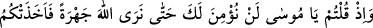
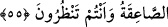

rahmetle size yaklaşır. Nitekim bir kudsî hadiste: “Bana bir karış yaklaşana ben bir
zirâ’ yaklaşırım”[283] buyurulmaktadır. “Allah, tevbelerinizi kabûl etmiştir, şüphesiz
O tevbeleri çokça kabûl eden Rahîm olandır.” (el-Bakara, 2/54)
Mesnevî’de şöyle denilmiştir:
Kökü nefes olan ömrün geçenine üzülme,
Onun hayat suyu tevbedir, eğer kurumamışsa,
Ömür köküne (tevbe) hayat suyunu dök
Tâ ki hayat ağacı kurumasın, canlı olsun.
55. Bir zamanlar: Ey Mûsâ! Biz Allah’ı açıkça görmedikçe asla sana inanmayız,
demiştiniz de bakıp durur olduğunuz halde hemen sizi yıldırım çarpmıştı.
Bu nimet, Allah’ın İsrâîloğulları’na Kur’ân’da saydığı altıncı nimettir: Ey
İsrâîloğulları! Mûsâ’nın, buzağıya tapmalarından dolayı Allah’dan bağışlanma dilemek
üzere seçip Tûr’a götürdüğü atalarınızdan yetmiş kişinin şu sözlerini hatırlayın. –Bu
yetmiş kişi, Fir’avn’ın boğulmasından sonra Tevrât’ı getirmek için Tûr’a beraber
gittikleri yetmiş kişi değildir– Onlar: “Ey Mûsâ biz senin sözüne ve dâ’vetine bakıp ta
bu kitabın Allah’ın kitabı olduğuna, Onunla amel etmemizin emredildiğine ve senin
Allah’ın kelâmını işittiğine inanmayız. Allah’ı gözlerimizle, aramızda hiçbir engel
olmaksızın görürsek, o zaman îmân ederiz” dediler. Âyette geçen “cehr” daha ziyâde,
işitilen şeylerde kullanılır. Görülen şeyler için ise “ıyânen” kelimesi kullanılır. Ancak
açığa çıkmada ve netlikte birbirine yakın oldukları için burada görme husûsu da “cehr”
kelimesi ile kullanılmıştır. Bu edebsizlikleri üzerine onlara yıldırım çarpmıştı.
“Sâika;” diye adlandırılan yıldırım, gökten gelen sesle karışık yakıcı ateştir.
Öldürücü, korkutucu ve aklı, anlayışı gideren her şey demektir. Ateş, ses veya başka bir
şey olabilir. Allah’la inâdlaşmada aşırı gitmeleri ve O’ndan dünyâda imkânsız olan bir
şeyi istemelerinden dolayı yıldırım onları yakmıştır.
Allah’ın müslümanlarca görülmesi olayı âhırette keyfiyetsiz olarak vuku bulacaktır.
Birkaç peygamber Allah’ı bu dünyâda da görmüşlerdir.
Onlar gökten inen “sâika” denilen yıldırımı görmekte –veya bu sâika korkunç bir ses
ise– onu işitmekteydiler. Bu fecî durumda onların bâzısı hemen ölmüş, kalanlar onların
nasıl öldüklerini görmüşlerdir. Mecâzen bu olay “ölümü görmek” şeklinde ifâde
edilmiştir.